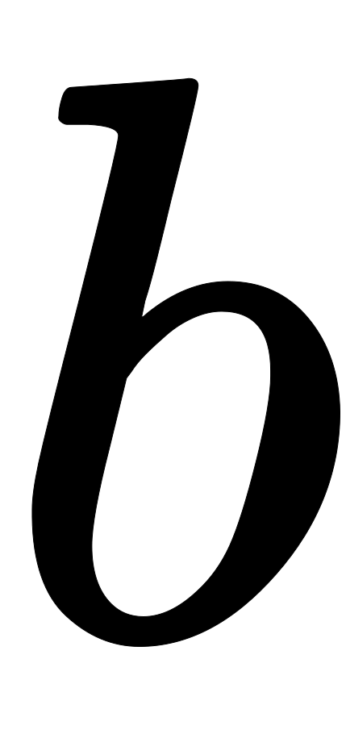

Recurrent neural network
| Part of a series on |
| Machine learning and data mining |
|---|
A recurrent neural network (RNN) is a class of artificial neural networks where connections between nodes form a directed graph along a temporal sequence. This allows it to exhibit temporal dynamic behavior. Derived from feedforward neural networks, RNNs can use their internal state (memory) to process variable length sequences of inputs.[1][2][3] This makes them applicable to tasks such as unsegmented, connected handwriting recognition[4] or speech recognition.[5][6]
The term recurrent neural network is used indiscriminately to refer to two broad classes of networks with a similar general structure, where one is finite impulse and the other is infinite impulse. Both classes of networks exhibit temporal dynamic behavior.[7] A finite impulse recurrent network is a directed acyclic graph that can be unrolled and replaced with a strictly feedforward neural network, while an infinite impulse recurrent network is a directed cyclic graph that can not be unrolled.
Both finite impulse and infinite impulse recurrent networks can have additional stored states, and the storage can be under direct control by the neural network. The storage can also be replaced by another network or graph, if that incorporates time delays or has feedback loops. Such controlled states are referred to as gated state or gated memory, and are part of long short-term memory networks (LSTMs) and gated recurrent units. This is also called Feedback Neural Network (FNN).
In typical libraries like PyTorch Just-in-time compilation plays an important role for efficiently implementing recurrent neural networks.
History[edit]
Recurrent neural networks were based on David Rumelhart's work in 1986.[8] Hopfield networks a special kind of RNN were discovered by John Hopfield in 1982. In 1993, a neural history compressor system solved a Very Deep Learning task that required more than 1000 subsequent layers in an RNN unfolded in time.[9]
LSTM[edit]
Long short-term memory (LSTM) networks were invented by Hochreiter and Schmidhuber in 1997 and set accuracy records in multiple applications domains.[10]
Around 2007, LSTM started to revolutionize speech recognition, outperforming traditional models in certain speech applications.[11] In 2009, a Connectionist Temporal Classification (CTC)-trained LSTM network was the first RNN to win pattern recognition contests when it won several competitions in connected handwriting recognition.[12][13] In 2014, the Chinese company Baidu used CTC-trained RNNs to break the 2S09 Switchboard Hub5'00 speech recognition dataset[14] benchmark without using any traditional speech processing methods.[15]
LSTM also improved large-vocabulary speech recognition[5][6] and text-to-speech synthesis[16] and was used in Google Android.[12][17] In 2015, Google's speech recognition reportedly experienced a dramatic performance jump of 49%[citation needed] through CTC-trained LSTM.[18]
LSTM broke records for improved machine translation,[19] Language Modeling[20] and Multilingual Language Processing.[21] LSTM combined with convolutional neural networks (CNNs) improved automatic image captioning.[22]
Architectures[edit]
RNNs come in many variants.
Fully recurrent[edit]
Fully recurrent neural networks (FRNN) connect the outputs of all neurons to the inputs of all neurons. This is the most general neural network topology because all other topologies can be represented by setting some connection weights to zero to simulate the lack of connections between those neurons. The illustration to the right may be misleading to many because practical neural network topologies are frequently organized in "layers" and the drawing gives that appearance. However, what appears to be layers are, in fact, different steps in time of the same fully recurrent neural network. The left-most item in the illustration shows the recurrent connections as the arc labeled 'v'. It is "unfolded" in time to produce the appearance of layers.
Elman networks and Jordan networks[edit]
An Elman network is a three-layer network (arranged horizontally as x, y, and z in the illustration) with the addition of a set of context units (u in the illustration). The middle (hidden) layer is connected to these context units fixed with a weight of one.[23] At each time step, the input is fed forward and a learning rule is applied. The fixed back-connections save a copy of the previous values of the hidden units in the context units (since they propagate over the connections before the learning rule is applied). Thus the network can maintain a sort of state, allowing it to perform such tasks as sequence-prediction that are beyond the power of a standard multilayer perceptron.
Jordan networks are similar to Elman networks. The context units are fed from the output layer instead of the hidden layer. The context units in a Jordan network are also referred to as the state layer. They have a recurrent connection to themselves.[23]
Elman and Jordan networks are also known as Simple recurrent networks (SRN).
Variables and functions
- : input vector
- : hidden layer vector
- : output vector
- , and : parameter matrices and vector
- and : Activation functions


Hopfield[edit]
The Hopfield network is an RNN in which all connections across layers are equally sized. It requires stationary inputs and is thus not a general RNN, as it does not process sequences of patterns. However, it guarantees that it will converge. If the connections are trained using Hebbian learning then the Hopfield network can perform as robust content-addressable memory, resistant to connection alteration.
Bidirectional associative memory[edit]
Introduced by Bart Kosko,[26] a bidirectional associative memory (BAM) network is a variant of a Hopfield network that stores associative data as a vector. The bi-directionality comes from passing information through a matrix and its transpose. Typically, bipolar encoding is preferred to binary encoding of the associative pairs. Recently, stochastic BAM models using Markov stepping were optimized for increased network stability and relevance to real-world applications.[27]
A BAM network has two layers, either of which can be driven as an input to recall an association and produce an output on the other layer.[28]
Echo state[edit]
The echo state network (ESN) has a sparsely connected random hidden layer. The weights of output neurons are the only part of the network that can change (be trained). ESNs are good at reproducing certain time series.[29] A variant for spiking neurons is known as a liquid state machine.[30]
Independently RNN (IndRNN)[edit]
The Independently recurrent neural network (IndRNN)[31] addresses the gradient vanishing and exploding problems in the traditional fully connected RNN. Each neuron in one layer only receives its own past state as context information (instead of full connectivity to all other neurons in this layer) and thus neurons are independent of each other's history. The gradient backpropagation can be regulated to avoid gradient vanishing and exploding in order to keep long or short-term memory. The cross-neuron information is explored in the next layers. IndRNN can be robustly trained with the non-saturated nonlinear functions such as ReLU. Using skip connections, deep networks can be trained.
Recursive[edit]
A recursive neural network[32] is created by applying the same set of weights recursively over a differentiable graph-like structure by traversing the structure in topological order. Such networks are typically also trained by the reverse mode of automatic differentiation.[33][34] They can process distributed representations of structure, such as logical terms. A special case of recursive neural networks is the RNN whose structure corresponds to a linear chain. Recursive neural networks have been applied to natural language processing.[35] The Recursive Neural Tensor Network uses a tensor-based composition function for all nodes in the tree.[36]
Neural history compressor[edit]
The neural history compressor is an unsupervised stack of RNNs.[37] At the input level, it learns to predict its next input from the previous inputs. Only unpredictable inputs of some RNN in the hierarchy become inputs to the next higher level RNN, which therefore recomputes its internal state only rarely. Each higher level RNN thus studies a compressed representation of the information in the RNN below. This is done such that the input sequence can be precisely reconstructed from the representation at the highest level.
The system effectively minimises the description length or the negative logarithm of the probability of the data.[38] Given a lot of learnable predictability in the incoming data sequence, the highest level RNN can use supervised learning to easily classify even deep sequences with long intervals between important events.
It is possible to distill the RNN hierarchy into two RNNs: the "conscious" chunker (higher level) and the "subconscious" automatizer (lower level).[37] Once the chunker has learned to predict and compress inputs that are unpredictable by the automatizer, then the automatizer can be forced in the next learning phase to predict or imitate through additional units the hidden units of the more slowly changing chunker. This makes it easy for the automatizer to learn appropriate, rarely changing memories across long intervals. In turn this helps the automatizer to make many of its once unpredictable inputs predictable, such that the chunker can focus on the remaining unpredictable events.[37]
A generative model partially overcame the vanishing gradient problem[39] of automatic differentiation or backpropagation in neural networks in 1992. In 1993, such a system solved a Very Deep Learning task that required more than 1000 subsequent layers in an RNN unfolded in time.[9]
Second order RNNs[edit]
Second order RNNs use higher order weights instead of the standard weights, and states can be a product. This allows a direct mapping to a finite-state machine both in training, stability, and representation.[40][41] Long short-term memory is an example of this but has no such formal mappings or proof of stability.
Long short-term memory[edit]

Long short-term memory (LSTM) is a deep learning system that avoids the vanishing gradient problem. LSTM is normally augmented by recurrent gates called forget gates.[42] LSTM prevents backpropagated errors from vanishing or exploding.[39] Instead, errors can flow backwards through unlimited numbers of virtual layers unfolded in space. That is, LSTM can learn tasks[12] that require memories of events that happened thousands or even millions of discrete time steps earlier. Problem-specific LSTM-like topologies can be evolved.[43] LSTM works even given long delays between significant events and can handle signals that mix low and high frequency components.
Many applications use stacks of LSTM RNNs[44] and train them by Connectionist Temporal Classification (CTC)[45] to find an RNN weight matrix that maximizes the probability of the label sequences in a training set, given the corresponding input sequences. CTC achieves both alignment and recognition.
LSTM can learn to recognize context-sensitive languages unlike previous models based on hidden Markov models (HMM) and similar concepts.[46]
Gated recurrent unit[edit]
Gated recurrent units (GRUs) are a gating mechanism in recurrent neural networks introduced in 2014. They are used in the full form and several simplified variants.[47][48] Their performance on polyphonic music modeling and speech signal modeling was found to be similar to that of long short-term memory.[49] They have fewer parameters than LSTM, as they lack an output gate.[50]
Bi-directional[edit]
Bi-directional RNNs use a finite sequence to predict or label each element of the sequence based on the element's past and future contexts. This is done by concatenating the outputs of two RNNs, one processing the sequence from left to right, the other one from right to left. The combined outputs are the predictions of the teacher-given target signals. This technique has been proven to be especially useful when combined with LSTM RNNs.[51][52]
Continuous-time[edit]
A continuous-time recurrent neural network (CTRNN) uses a system of ordinary differential equations to model the effects on a neuron of the incoming inputs.
For a neuron in the network with activation , the rate of change of activation is given by:


Where:
- : Time constant of postsynaptic node
- : Activation of postsynaptic node
- : Rate of change of activation of postsynaptic node
- : Weight of connection from pre to postsynaptic node
- : Sigmoid of x e.g. .
- : Activation of presynaptic node
- : Bias of presynaptic node
- : Input (if any) to node


{kind=link}
{kind=link}
{kind=link}
{kind=link}
CTRNNs have been applied to evolutionary robotics where they have been used to address vision,[53] co-operation,[54] and minimal cognitive behaviour.[55]
Note that, by the Shannon sampling theorem, discrete time recurrent neural networks can be viewed as continuous-time recurrent neural networks where the differential equations have transformed into equivalent difference equations.[56] This transformation can be thought of as occurring after the post-synaptic node activation functions have been low-pass filtered but prior to sampling.
Hierarchical[edit]
This section needs expansion. You can help by adding to it. (August 2019) |
{kind=link}
Hierarchical RNNs connect their neurons in various ways to decompose hierarchical behavior into useful subprograms.[37][57] Such hierarchical structures of cognition are present in theories of memory presented by philosopher Henri Bergson, whose philosophical views have inspired hierarchical models.[58]
Recurrent multilayer perceptron network[edit]
Generally, a recurrent multilayer perceptron network (RMLP) network consists of cascaded subnetworks, each of which contains multiple layers of nodes. Each of these subnetworks is feed-forward except for the last layer, which can have feedback connections. Each of these subnets is connected only by feed-forward connections.[59]
Multiple timescales model[edit]
A multiple timescales recurrent neural network (MTRNN) is a neural-based computational model that can simulate the functional hierarchy of the brain through self-organization that depends on spatial connection between neurons and on distinct types of neuron activities, each with distinct time properties.[60][61] With such varied neuronal activities, continuous sequences of any set of behaviors are segmented into reusable primitives, which in turn are flexibly integrated into diverse sequential behaviors. The biological approval of such a type of hierarchy was discussed in the memory-prediction theory of brain function by Hawkins in his book On Intelligence.[citation needed] Such a hierarchy also agrees with theories of memory posited by philosopher Henri Bergson, which have been incorporated into an MTRNN model.[62][63]
Neural Turing machines[edit]
Neural Turing machines (NTMs) are a method of extending recurrent neural networks by coupling them to external memory resources which they can interact with by attentional processes. The combined system is analogous to a Turing machine or Von Neumann architecture but is differentiable end-to-end, allowing it to be efficiently trained with gradient descent.[64]
Differentiable neural computer[edit]
Differentiable neural computers (DNCs) are an extension of Neural Turing machines, allowing for usage of fuzzy amounts of each memory address and a record of chronology.
Neural network pushdown automata[edit]
Neural network pushdown automata (NNPDA) are similar to NTMs, but tapes are replaced by analogue stacks that are differentiable and that are trained. In this way, they are similar in complexity to recognizers of context free grammars (CFGs).[65]
Memristive Networks[edit]
Greg Snider of HP Labs describes a system of cortical computing with memristive nanodevices.[66] The memristors (memory resistors) are implemented by thin film materials in which the resistance is electrically tuned via the transport of ions or oxygen vacancies within the film. DARPA's SyNAPSE project has funded IBM Research and HP Labs, in collaboration with the Boston University Department of Cognitive and Neural Systems (CNS), to develop neuromorphic architectures which may be based on memristive systems. Memristive networks are a particular type of physical neural network that have very similar properties to (Little-)Hopfield networks, as they have a continuous dynamics, have a limited memory capacity and they natural relax via the minimization of a function which is asymptotic to the Ising model. In this sense, the dynamics of a memristive circuit has the advantage compared to a Resistor-Capacitor network to have a more interesting non-linear behavior. From this point of view, engineering an analog memristive networks accounts to a peculiar type of neuromorphic engineering in which the device behavior depends on the circuit wiring, or topology. [67][68]
Training[edit]
Gradient descent[edit]
Gradient descent is a first-order iterative optimization algorithm for finding the minimum of a function. In neural networks, it can be used to minimize the error term by changing each weight in proportion to the derivative of the error with respect to that weight, provided the non-linear activation functions are differentiable. Various methods for doing so were developed in the 1980s and early 1990s by Werbos, Williams, Robinson, Schmidhuber, Hochreiter, Pearlmutter and others.
The standard method is called backpropagation through time or BPTT, and is a generalization of back-propagation for feed-forward networks.[69][70] Like that method, it is an instance of automatic differentiation in the reverse accumulation mode of Pontryagin's minimum principle. A more computationally expensive online variant is called Real-Time Recurrent Learning or RTRL,[71][72] which is an instance of automatic differentiation in the forward accumulation mode with stacked tangent vectors. Unlike BPTT, this algorithm is local in time but not local in space.
In this context, local in space means that a unit's weight vector can be updated using only information stored in the connected units and the unit itself such that update complexity of a single unit is linear in the dimensionality of the weight vector. Local in time means that the updates take place continually (on-line) and depend only on the most recent time step rather than on multiple time steps within a given time horizon as in BPTT. Biological neural networks appear to be local with respect to both time and space.[73][74]
For recursively computing the partial derivatives, RTRL has a time-complexity of O(number of hidden x number of weights) per time step for computing the Jacobian matrices, while BPTT only takes O(number of weights) per time step, at the cost of storing all forward activations within the given time horizon.[75] An online hybrid between BPTT and RTRL with intermediate complexity exists,[76][77] along with variants for continuous time.[78]
A major problem with gradient descent for standard RNN architectures is that error gradients vanish exponentially quickly with the size of the time lag between important events.[39][79] LSTM combined with a BPTT/RTRL hybrid learning method attempts to overcome these problems.[10] This problem is also solved in the independently recurrent neural network (IndRNN)[31] by reducing the context of a neuron to its own past state and the cross-neuron information can then be explored in the following layers. Memories of different range including long-term memory can be learned without the gradient vanishing and exploding problem.
The on-line algorithm called causal recursive backpropagation (CRBP), implements and combines BPTT and RTRL paradigms for locally recurrent networks.[80] It works with the most general locally recurrent networks. The CRBP algorithm can minimize the global error term. This fact improves stability of the algorithm, providing a unifying view on gradient calculation techniques for recurrent networks with local feedback.
One approach to the computation of gradient information in RNNs with arbitrary architectures is based on signal-flow graphs diagrammatic derivation.[81] It uses the BPTT batch algorithm, based on Lee's theorem for network sensitivity calculations.[82] It was proposed by Wan and Beaufays, while its fast online version was proposed by Campolucci, Uncini and Piazza.[82]
Global optimization methods[edit]
Training the weights in a neural network can be modeled as a non-linear global optimization problem. A target function can be formed to evaluate the fitness or error of a particular weight vector as follows: First, the weights in the network are set according to the weight vector. Next, the network is evaluated against the training sequence. Typically, the sum-squared-difference between the predictions and the target values specified in the training sequence is used to represent the error of the current weight vector. Arbitrary global optimization techniques may then be used to minimize this target function.
The most common global optimization method for training RNNs is genetic algorithms, especially in unstructured networks.[83][84][85]
Initially, the genetic algorithm is encoded with the neural network weights in a predefined manner where one gene in the chromosome represents one weight link. The whole network is represented as a single chromosome. The fitness function is evaluated as follows:
- Each weight encoded in the chromosome is assigned to the respective weight link of the network.
- The training set is presented to the network which propagates the input signals forward.
- The mean-squared-error is returned to the fitness function.
- This function drives the genetic selection process.
Many chromosomes make up the population; therefore, many different neural networks are evolved until a stopping criterion is satisfied. A common stopping scheme is:
- When the neural network has learnt a certain percentage of the training data or
- When the minimum value of the mean-squared-error is satisfied or
- When the maximum number of training generations has been reached.
The stopping criterion is evaluated by the fitness function as it gets the reciprocal of the mean-squared-error from each network during training. Therefore, the goal of the genetic algorithm is to maximize the fitness function, reducing the mean-squared-error.
Other global (and/or evolutionary) optimization techniques may be used to seek a good set of weights, such as simulated annealing or particle swarm optimization.
Related fields and models[edit]
RNNs may behave chaotically. In such cases, dynamical systems theory may be used for analysis.
They are in fact recursive neural networks with a particular structure: that of a linear chain. Whereas recursive neural networks operate on any hierarchical structure, combining child representations into parent representations, recurrent neural networks operate on the linear progression of time, combining the previous time step and a hidden representation into the representation for the current time step.
In particular, RNNs can appear as nonlinear versions of finite impulse response and infinite impulse response filters and also as a nonlinear autoregressive exogenous model (NARX).[86]
Libraries[edit]
- Apache Singa
- Caffe: Created by the Berkeley Vision and Learning Center (BVLC). It supports both CPU and GPU. Developed in C++, and has Python and MATLAB wrappers.
- Chainer: The first stable deep learning library that supports dynamic, define-by-run neural networks. Fully in Python, production support for CPU, GPU, distributed training.
- Deeplearning4j: Deep learning in Java and Scala on multi-GPU-enabled Spark. A general-purpose deep learning library for the JVM production stack running on a C++ scientific computing engine. Allows the creation of custom layers. Integrates with Hadoop and Kafka.
- Flux: includes interfaces for RNNs, including GRUs and LSTMs, written in Julia.
- Keras: High-level, easy to use API, providing a wrapper to many other deep learning libraries.
- Microsoft Cognitive Toolkit
- MXNet: a modern open-source deep learning framework used to train and deploy deep neural networks.
- PyTorch: Tensors and Dynamic neural networks in Python with strong GPU acceleration.
- TensorFlow: Apache 2.0-licensed Theano-like library with support for CPU, GPU and Google's proprietary TPU,[87] mobile
- Theano: The reference deep-learning library for Python with an API largely compatible with the popular NumPy library. Allows user to write symbolic mathematical expressions, then automatically generates their derivatives, saving the user from having to code gradients or backpropagation. These symbolic expressions are automatically compiled to CUDA code for a fast, on-the-GPU implementation.
- Torch (www.torch.ch): A scientific computing framework with wide support for machine learning algorithms, written in C and lua. The main author is Ronan Collobert, and it is now used at Facebook AI Research and Twitter.
Applications[edit]
Applications of recurrent neural networks include:
- Machine Translation[19]
- Robot control[88]
- Time series prediction[89][90][91]
- Speech recognition[92][93][94]
- Speech synthesis[95]
- Braincomputer interfaces[96]
- Time series anomaly detection[97]
- Rhythm learning[98]
- Music composition[99]
- Grammar learning[100][101][102]
- Handwriting recognition[103][104]
- Human action recognition[105]
- Protein Homology Detection[106]
- Predicting subcellular localization of proteins[52]
- Several prediction tasks in the area of business process management[107]
- Prediction in medical care pathways[108]
References[edit]
- ^ Dupond, Samuel (2019). "A thorough review on the current advance of neural network structures". Annual Reviews in Control. 14: 200230.
- ^ Abiodun, Oludare Isaac; Jantan, Aman; Omolara, Abiodun Esther; Dada, Kemi Victoria; Mohamed, Nachaat Abdelatif; Arshad, Humaira (2018-11-01). "State-of-the-art in artificial neural network applications: A survey". Heliyon. 4 (11): e00938. doi:10.1016/j.heliyon.2018.e00938. ISSN 2405-8440. PMC 6260436. PMID 30519653.
- ^ Tealab, Ahmed (2018-12-01). "Time series forecasting using artificial neural networks methodologies: A systematic review". Future Computing and Informatics Journal. 3 (2): 334340. doi:10.1016/j.fcij.2018.10.003. ISSN 2314-7288.
- ^ Graves, Alex; Liwicki, Marcus; Fernandez, Santiago; Bertolami, Roman; Bunke, Horst; Schmidhuber, Jrgen (2009). "A Novel Connectionist System for Improved Unconstrained Handwriting Recognition" (PDF). IEEE Transactions on Pattern Analysis and Machine Intelligence. 31 (5): 855868. CiteSeerX 10.1.1.139.4502. doi:10.1109/tpami.2008.137. PMID 19299860. S2CID 14635907.
- ^ Jump up to: a b Sak, Haim; Senior, Andrew; Beaufays, Franoise (2014). "Long Short-Term Memory recurrent neural network architectures for large scale acoustic modeling" (PDF).
- ^ Jump up to: a b Li, Xiangang; Wu, Xihong (2014-10-15). "Constructing Long Short-Term Memory based Deep Recurrent Neural Networks for Large Vocabulary Speech Recognition". arXiv:1410.4281 [cs.CL].
- ^ Miljanovic, Milos (FebMar 2012). "Comparative analysis of Recurrent and Finite Impulse Response Neural Networks in Time Series Prediction" (PDF). Indian Journal of Computer and Engineering. 3 (1).
- ^ Williams, Ronald J.; Hinton, Geoffrey E.; Rumelhart, David E. (October 1986). "Learning representations by back-propagating errors". Nature. 323 (6088): 533536. Bibcode:1986Natur.323..533R. doi:10.1038/323533a0. ISSN 1476-4687. S2CID 205001834.
- ^ Jump up to: a b Schmidhuber, Jrgen (1993). Habilitation thesis: System modeling and optimization (PDF). Page 150 ff demonstrates credit assignment across the equivalent of 1,200 layers in an unfolded RNN.
- ^ Jump up to: a b Hochreiter, Sepp; Schmidhuber, Jrgen (1997-11-01). "Long Short-Term Memory". Neural Computation. 9 (8): 17351780. doi:10.1162/neco.1997.9.8.1735. PMID 9377276. S2CID 1915014.
- ^ Fernndez, Santiago; Graves, Alex; Schmidhuber, Jrgen (2007). An Application of Recurrent Neural Networks to Discriminative Keyword Spotting. Proceedings of the 17th International Conference on Artificial Neural Networks. ICANN'07. Berlin, Heidelberg: Springer-Verlag. pp. 220229. ISBN 978-3-540-74693-5.
- ^ Jump up to: a b c Schmidhuber, Jrgen (January 2015). "Deep Learning in Neural Networks: An Overview". Neural Networks. 61: 85117. arXiv:1404.7828. doi:10.1016/j.neunet.2014.09.003. PMID 25462637. S2CID 11715509.
- ^ Graves,
Alex; Schmidhuber, Jrgen (2009). Bengio, Yoshua; Schuurmans, Dale;
Lafferty, John; Williams, Chris editor-K. I.; Culotta, Aron (eds.). "Offline Handwriting Recognition with Multidimensional Recurrent Neural Networks". Neural Information Processing Systems (NIPS) Foundation: 545552. Cite journal requires
|journal=(help) - ^ Switchboard Hub5'00 speech recognition dataset
- ^ Hannun, Awni; Case, Carl; Casper, Jared; Catanzaro, Bryan; Diamos, Greg; Elsen, Erich; Prenger, Ryan; Satheesh, Sanjeev; Sengupta, Shubho (2014-12-17). "Deep Speech: Scaling up end-to-end speech recognition". arXiv:1412.5567 [cs.CL].
- ^ Fan, Bo; Wang, Lijuan; Soong, Frank K.; Xie, Lei (2015) "Photo-Real Talking Head with Deep Bidirectional LSTM", in Proceedings of ICASSP 2015
- ^ Zen, Heiga; Sak, Haim (2015). "Unidirectional Long Short-Term Memory Recurrent Neural Network with Recurrent Output Layer for Low-Latency Speech Synthesis" (PDF). Google.com. ICASSP. pp. 44704474.
- ^ Sak, Haim; Senior, Andrew; Rao, Kanishka; Beaufays, Franoise; Schalkwyk, Johan (September 2015). "Google voice search: faster and more accurate".
- ^ Jump up to: a b Sutskever, Ilya; Vinyals, Oriol; Le, Quoc V. (2014). "Sequence to Sequence Learning with Neural Networks" (PDF). Electronic Proceedings of the Neural Information Processing Systems Conference. 27: 5346. arXiv:1409.3215. Bibcode:2014arXiv1409.3215S.
- ^ Jozefowicz, Rafal; Vinyals, Oriol; Schuster, Mike; Shazeer, Noam; Wu, Yonghui (2016-02-07). "Exploring the Limits of Language Modeling". arXiv:1602.02410 [cs.CL].
- ^ Gillick, Dan; Brunk, Cliff; Vinyals, Oriol; Subramanya, Amarnag (2015-11-30). "Multilingual Language Processing From Bytes". arXiv:1512.00103 [cs.CL].
- ^ Vinyals, Oriol; Toshev, Alexander; Bengio, Samy; Erhan, Dumitru (2014-11-17). "Show and Tell: A Neural Image Caption Generator". arXiv:1411.4555 [cs.CV].
- ^ Jump up to: a b Cruse, Holk; Neural Networks as Cybernetic Systems, 2nd and revised edition
- ^ Elman, Jeffrey L. (1990). "Finding Structure in Time". Cognitive Science. 14 (2): 179211. doi:10.1016/0364-0213(90)90002-E.
- ^ Jordan, Michael I. (1997-01-01). "Serial Order: A Parallel Distributed Processing Approach". Neural-Network Models of Cognition - Biobehavioral Foundations. Advances in Psychology. Neural-Network Models of Cognition. 121. pp. 471495. doi:10.1016/s0166-4115(97)80111-2. ISBN 9780444819314.
- ^ Kosko, Bart (1988). "Bidirectional associative memories". IEEE Transactions on Systems, Man, and Cybernetics. 18 (1): 4960. doi:10.1109/21.87054. S2CID 59875735.
- ^ Rakkiyappan, Rajan; Chandrasekar, Arunachalam; Lakshmanan, Subramanian; Park, Ju H. (2 January 2015). "Exponential stability for markovian jumping stochastic BAM neural networks with mode-dependent probabilistic time-varying delays and impulse control". Complexity. 20 (3): 3965. Bibcode:2015Cmplx..20c..39R. doi:10.1002/cplx.21503.
- ^ Rojas, Rul (1996). Neural networks: a systematic introduction. Springer. p. 336. ISBN 978-3-540-60505-8.
- ^ Jaeger, Herbert; Haas, Harald (2004-04-02). "Harnessing Nonlinearity: Predicting Chaotic Systems and Saving Energy in Wireless Communication". Science. 304 (5667): 7880. Bibcode:2004Sci...304...78J. CiteSeerX 10.1.1.719.2301. doi:10.1126/science.1091277. PMID 15064413. S2CID 2184251.
- ^ Maass,
Wolfgang; Natschlger, Thomas; Markram, Henry (2002-08-20). "A fresh
look at real-time computation in generic recurrent neural circuits".
Technical report. Institute for Theoretical Computer Science, Technische
Universitt Graz. Cite journal requires
|journal=(help) - ^ Jump up to: a b Li, Shuai; Li, Wanqing; Cook, Chris; Zhu, Ce; Yanbo, Gao (2018). "Independently Recurrent Neural Network (IndRNN): Building a Longer and Deeper RNN". arXiv:1803.04831 [cs.CV].
- ^ Goller, Christoph; Kchler, Andreas (1996). Learning task-dependent distributed representations by backpropagation through structure. IEEE International Conference on Neural Networks. 1. p. 347. CiteSeerX 10.1.1.52.4759. doi:10.1109/ICNN.1996.548916. ISBN 978-0-7803-3210-2. S2CID 6536466.
- ^ Linnainmaa, Seppo (1970). The representation of the cumulative rounding error of an algorithm as a Taylor expansion of the local rounding errors. M.Sc. thesis (in Finnish), University of Helsinki.
- ^ Griewank, Andreas; Walther, Andrea (2008). Evaluating Derivatives: Principles and Techniques of Algorithmic Differentiation (Second ed.). SIAM. ISBN 978-0-89871-776-1.
- ^ Socher, Richard; Lin, Cliff; Ng, Andrew Y.; Manning, Christopher D., "Parsing Natural Scenes and Natural Language with Recursive Neural Networks" (PDF), 28th International Conference on Machine Learning (ICML 2011)
- ^ Socher, Richard; Perelygin, Alex; Wu, Jean Y.; Chuang, Jason; Manning, Christopher D.; Ng, Andrew Y.; Potts, Christopher. "Recursive Deep Models for Semantic Compositionality Over a Sentiment Treebank" (PDF). Emnlp 2013.
- ^ Jump up to: a b c d Schmidhuber, Jrgen (1992). "Learning complex, extended sequences using the principle of history compression" (PDF). Neural Computation. 4 (2): 234242. doi:10.1162/neco.1992.4.2.234. S2CID 18271205.
- ^ Schmidhuber, Jrgen (2015). "Deep Learning". Scholarpedia. 10 (11): 32832. Bibcode:2015SchpJ..1032832S. doi:10.4249/scholarpedia.32832.
- ^ Jump up to: a b c Hochreiter, Sepp (1991), Untersuchungen zu dynamischen neuronalen Netzen, Diploma thesis, Institut f. Informatik, Technische Univ. Munich, Advisor Jrgen Schmidhuber
- ^ Giles, C. Lee; Miller, Clifford B.; Chen, Dong; Chen, Hsing-Hen; Sun, Guo-Zheng; Lee, Yee-Chun (1992). "Learning and Extracting Finite State Automata with Second-Order Recurrent Neural Networks" (PDF). Neural Computation. 4 (3): 393405. doi:10.1162/neco.1992.4.3.393. S2CID 19666035.
- ^ Omlin, Christian W.; Giles, C. Lee (1996). "Constructing Deterministic Finite-State Automata in Recurrent Neural Networks". Journal of the ACM. 45 (6): 937972. CiteSeerX 10.1.1.32.2364. doi:10.1145/235809.235811. S2CID 228941.
- ^ Gers, Felix A.; Schraudolph, Nicol N.; Schmidhuber, Jrgen (2002). "Learning Precise Timing with LSTM Recurrent Networks" (PDF). Journal of Machine Learning Research. 3: 115143. Retrieved 2017-06-13.
- ^ Bayer, Justin; Wierstra, Daan; Togelius, Julian; Schmidhuber, Jrgen (2009-09-14). Evolving Memory Cell Structures for Sequence Learning (PDF). Artificial Neural Networks ICANN 2009. Lecture Notes in Computer Science. 5769. Berlin, Heidelberg: Springer. pp. 755764. doi:10.1007/978-3-642-04277-5_76. ISBN 978-3-642-04276-8.
- ^ Fernndez, Santiago; Graves, Alex; Schmidhuber, Jrgen (2007). "Sequence labelling in structured domains with hierarchical recurrent neural networks". Proc. 20th International Joint Conference on Artificial Inligence, Ijcai 2007: 774779. CiteSeerX 10.1.1.79.1887.
- ^ Graves, Alex; Fernndez, Santiago; Gomez, Faustino J. (2006). "Connectionist temporal classification: Labelling unsegmented sequence data with recurrent neural networks". Proceedings of the International Conference on Machine Learning: 369376. CiteSeerX 10.1.1.75.6306.
- ^ Gers, Felix A.; Schmidhuber, Jrgen (November 2001). "LSTM recurrent networks learn simple context-free and context-sensitive languages". IEEE Transactions on Neural Networks. 12 (6): 13331340. doi:10.1109/72.963769. ISSN 1045-9227. PMID 18249962. S2CID 10192330.
- ^ Heck, Joel; Salem, Fathi M. (2017-01-12). "Simplified Minimal Gated Unit Variations for Recurrent Neural Networks". arXiv:1701.03452 [cs.NE].
- ^ Dey, Rahul; Salem, Fathi M. (2017-01-20). "Gate-Variants of Gated Recurrent Unit (GRU) Neural Networks". arXiv:1701.05923 [cs.NE].
- ^ Chung, Junyoung; Gulcehre, Caglar; Cho, KyungHyun; Bengio, Yoshua (2014). "Empirical Evaluation of Gated Recurrent Neural Networks on Sequence Modeling". arXiv:1412.3555 [cs.NE].
- ^ Britz, Denny (October 27, 2015). "Recurrent Neural Network Tutorial, Part 4 Implementing a GRU/LSTM RNN with Python and Theano WildML". Wildml.com. Retrieved May 18, 2016.
- ^ Graves, Alex; Schmidhuber, Jrgen (2005-07-01). "Framewise phoneme classification with bidirectional LSTM and other neural network architectures". Neural Networks. IJCNN 2005. 18 (5): 602610. CiteSeerX 10.1.1.331.5800. doi:10.1016/j.neunet.2005.06.042. PMID 16112549.
- ^ Jump up to: a b Thireou, Trias; Reczko, Martin (July 2007). "Bidirectional Long Short-Term Memory Networks for Predicting the Subcellular Localization of Eukaryotic Proteins". IEEE/ACM Transactions on Computational Biology and Bioinformatics. 4 (3): 441446. doi:10.1109/tcbb.2007.1015. PMID 17666763. S2CID 11787259.
- ^ Harvey, Inman; Husbands, Phil; Cliff, Dave (1994), "Seeing the light: Artificial evolution, real vision", 3rd international conference on Simulation of adaptive behavior: from animals to animats 3, pp. 392401
- ^ Quinn, Matthew (2001). "Evolving communication without dedicated communication channels". Advances in Artificial Life. Lecture Notes in Computer Science. 2159. pp. 357366. CiteSeerX 10.1.1.28.5890. doi:10.1007/3-540-44811-X_38. ISBN 978-3-540-42567-0. Missing or empty
|title=(help) - ^ Beer, Randall D. (1997). "The dynamics of adaptive behavior: A research program". Robotics and Autonomous Systems. 20 (24): 257289. doi:10.1016/S0921-8890(96)00063-2.
- ^ Sherstinsky, Alex (2018-12-07). Bloem-Reddy, Benjamin; Paige, Brooks; Kusner, Matt; Caruana, Rich; Rainforth, Tom; Teh, Yee Whye (eds.). Deriving the Recurrent Neural Network Definition and RNN Unrolling Using Signal Processing. Critiquing and Correcting Trends in Machine Learning Workshop at NeurIPS-2018.
- ^ Paine, Rainer W.; Tani, Jun (2005-09-01). "How Hierarchical Control Self-organizes in Artificial Adaptive Systems". Adaptive Behavior. 13 (3): 211225. doi:10.1177/105971230501300303. S2CID 9932565.
- ^ "Burns, Benureau, Tani (2018) A Bergson-Inspired Adaptive Time Constant for the Multiple Timescales Recurrent Neural Network Model. JNNS".
- ^ Tutschku, Kurt (June 1995). Recurrent Multilayer Perceptrons for Identification and Control: The Road to Applications. Institute of Computer Science Research Report. 118. University of Wrzburg Am Hubland. CiteSeerX 10.1.1.45.3527.CS1 maint: date and year (link)
- ^ Yamashita, Yuichi; Tani, Jun (2008-11-07). "Emergence of Functional Hierarchy in a Multiple Timescale Neural Network Model: A Humanoid Robot Experiment". PLOS Computational Biology. 4 (11): e1000220. Bibcode:2008PLSCB...4E0220Y. doi:10.1371/journal.pcbi.1000220. PMC 2570613. PMID 18989398.
- ^ Alnajjar, Fady; Yamashita, Yuichi; Tani, Jun (2013). "The hierarchical and functional connectivity of higher-order cognitive mechanisms: neurorobotic model to investigate the stability and flexibility of working memory". Frontiers in Neurorobotics. 7: 2. doi:10.3389/fnbot.2013.00002. PMC 3575058. PMID 23423881.
- ^ "Burns, Benureau, Tani (2018) A Bergson-Inspired Adaptive Time Constant for the Multiple Timescales Recurrent Neural Network Model. JNNS".
- ^ "Proceedings of the 28th Annual Conference of the Japanese Neural Network Society (October, 2018)" (PDF).
- ^ Graves, Alex; Wayne, Greg; Danihelka, Ivo (2014). "Neural Turing Machines". arXiv:1410.5401 [cs.NE].
- ^ Sun, Guo-Zheng; Giles, C. Lee; Chen, Hsing-Hen (1998). "The Neural Network Pushdown Automaton: Architecture, Dynamics and Training". In Giles, C. Lee; Gori, Marco (eds.). Adaptive Processing of Sequences and Data Structures. Lecture Notes in Computer Science. Berlin, Heidelberg: Springer. pp. 296345. CiteSeerX 10.1.1.56.8723. doi:10.1007/bfb0054003. ISBN 9783540643418.
- ^ Snider, Greg (2008), "Cortical computing with memristive nanodevices", Sci-DAC Review, 10: 5865
- ^ Caravelli, Francesco; Traversa, Fabio Lorenzo; Di Ventra, Massimiliano (2017). "The complex dynamics of memristive circuits: analytical results and universal slow relaxation". Physical Review E. 95 (2): 022140. arXiv:1608.08651. Bibcode:2017PhRvE..95b2140C. doi:10.1103/PhysRevE.95.022140. PMID 28297937. S2CID 6758362.
- ^ Caravelli, Francesco (2019-11-07). "Asymptotic Behavior of Memristive Circuits". Entropy. 21 (8): 789. Bibcode:2019Entrp..21..789C. doi:10.3390/e21080789. PMC 789. PMID 33267502.
- ^ Werbos, Paul J. (1988). "Generalization of backpropagation with application to a recurrent gas market model". Neural Networks. 1 (4): 339356. doi:10.1016/0893-6080(88)90007-x.
- ^ Rumelhart, David E. (1985). Learning Internal Representations by Error Propagation. San Diego (CA): Institute for Cognitive Science, University of California.
- ^ Robinson, Anthony J.; Fallside, Frank (1987). The Utility Driven Dynamic Error Propagation Network. Technical Report CUED/F-INFENG/TR.1. Department of Engineering, University of Cambridge.
- ^ Williams, Ronald J.; Zipser, D. (1 February 2013). "Gradient-based learning algorithms for recurrent networks and their computational complexity". In Chauvin, Yves; Rumelhart, David E. (eds.). Backpropagation: Theory, Architectures, and Applications. Psychology Press. ISBN 978-1-134-77581-1.
- ^ Schmidhuber, Jrgen (1989-01-01). "A Local Learning Algorithm for Dynamic Feedforward and Recurrent Networks". Connection Science. 1 (4): 403412. doi:10.1080/09540098908915650. S2CID 18721007.
- ^ Prncipe, Jos C.; Euliano, Neil R.; Lefebvre, W. Curt (2000). Neural and adaptive systems: fundamentals through simulations. Wiley. ISBN 978-0-471-35167-2.
- ^ Yann, Ollivier; Tallec, Corentin; Charpiat, Guillaume (2015-07-28). "Training recurrent networks online without backtracking". arXiv:1507.07680 [cs.NE].
- ^ Schmidhuber, Jrgen (1992-03-01). "A Fixed Size Storage O(n3) Time Complexity Learning Algorithm for Fully Recurrent Continually Running Networks". Neural Computation. 4 (2): 243248. doi:10.1162/neco.1992.4.2.243. S2CID 11761172.
- ^ Williams, Ronald J. (1989). "Complexity of exact gradient computation algorithms for recurrent neural networks". Technical Report NU-CCS-89-27. Boston (MA): Northeastern University, College of Computer Science. Cite journal requires
|journal=(help) - ^ Pearlmutter, Barak A. (1989-06-01). "Learning State Space Trajectories in Recurrent Neural Networks". Neural Computation. 1 (2): 263269. doi:10.1162/neco.1989.1.2.263. S2CID 16813485.
- ^ Hochreiter, Sepp; et al. (15 January 2001). "Gradient flow in recurrent nets: the difficulty of learning long-term dependencies". In Kolen, John F.; Kremer, Stefan C. (eds.). A Field Guide to Dynamical Recurrent Networks. John Wiley & Sons. ISBN 978-0-7803-5369-5.
- ^ Campolucci, Paolo; Uncini, Aurelio; Piazza, Francesco; Rao, Bhaskar D. (1999). "On-Line Learning Algorithms for Locally Recurrent Neural Networks". IEEE Transactions on Neural Networks. 10 (2): 253271. CiteSeerX 10.1.1.33.7550. doi:10.1109/72.750549. PMID 18252525.
- ^ Wan, Eric A.; Beaufays, Franoise (1996). "Diagrammatic derivation of gradient algorithms for neural networks". Neural Computation. 8: 182201. doi:10.1162/neco.1996.8.1.182. S2CID 15512077.
- ^ Jump up to: a b Campolucci, Paolo; Uncini, Aurelio; Piazza, Francesco (2000). "A Signal-Flow-Graph Approach to On-line Gradient Calculation". Neural Computation. 12 (8): 19011927. CiteSeerX 10.1.1.212.5406. doi:10.1162/089976600300015196. PMID 10953244. S2CID 15090951.
- ^ Gomez, Faustino J.; Miikkulainen, Risto (1999), "Solving non-Markovian control tasks with neuroevolution" (PDF), IJCAI 99, Morgan Kaufmann, retrieved 5 August 2017
- ^ Syed, Omar (May 1995). "Applying Genetic Algorithms to Recurrent Neural Networks for Learning Network Parameters and Architecture". M.Sc. thesis, Department of Electrical Engineering, Case Western Reserve University, Advisor Yoshiyasu Takefuji.
- ^ Gomez, Faustino J.; Schmidhuber, Jrgen; Miikkulainen, Risto (June 2008). "Accelerated Neural Evolution Through Cooperatively Coevolved Synapses". Journal of Machine Learning Research. 9: 937965.
- ^ Siegelmann, Hava T.; Horne, Bill G.; Giles, C. Lee (1995). "Computational Capabilities of Recurrent NARX Neural Networks". IEEE Transactions on Systems, Man and Cybernetics, Part B (Cybernetics). 27 (2): 20815. CiteSeerX 10.1.1.48.7468. doi:10.1109/3477.558801. PMID 18255858.
- ^ Metz, Cade (May 18, 2016). "Google Built Its Very Own Chips to Power Its AI Bots". Wired.
- ^ Mayer, Hermann; Gomez, Faustino J.; Wierstra, Daan; Nagy, Istvan; Knoll, Alois; Schmidhuber, Jrgen (October 2006). A System for Robotic Heart Surgery that Learns to Tie Knots Using Recurrent Neural Networks. 2006 IEEE/RSJ International Conference on Intelligent Robots and Systems. pp. 543548. CiteSeerX 10.1.1.218.3399. doi:10.1109/IROS.2006.282190. ISBN 978-1-4244-0258-8. S2CID 12284900.
- ^ Wierstra, Daan; Schmidhuber, Jrgen; Gomez, Faustino J. (2005). "Evolino: Hybrid Neuroevolution/Optimal Linear Search for Sequence Learning". Proceedings of the 19th International Joint Conference on Artificial Intelligence (IJCAI), Edinburgh: 853858.
- ^ Petnehzi, Gbor (2019-01-01). "Recurrent neural networks for time series forecasting". arXiv:1901.00069 [cs.LG].
- ^ Hewamalage, Hansika; Bergmeir, Christoph; Bandara, Kasun (2020). "Recurrent Neural Networks for Time Series Forecasting: Current Status and Future Directions". International Journal of Forecasting. 37: 388427. arXiv:1909.00590. doi:10.1016/j.ijforecast.2020.06.008. S2CID 202540863.
- ^ Graves, Alex; Schmidhuber, Jrgen (2005). "Framewise phoneme classification with bidirectional LSTM and other neural network architectures". Neural Networks. 18 (56): 602610. CiteSeerX 10.1.1.331.5800. doi:10.1016/j.neunet.2005.06.042. PMID 16112549.
- ^ Fernndez, Santiago; Graves, Alex; Schmidhuber, Jrgen (2007). An Application of Recurrent Neural Networks to Discriminative Keyword Spotting. Proceedings of the 17th International Conference on Artificial Neural Networks. ICANN'07. Berlin, Heidelberg: Springer-Verlag. pp. 220229. ISBN 978-3540746935.
- ^ Graves, Alex; Mohamed, Abdel-rahman; Hinton, Geoffrey E. (2013). "Speech Recognition with Deep Recurrent Neural Networks". Acoustics, Speech and Signal Processing (ICASSP), 2013 IEEE International Conference on: 66456649. arXiv:1303.5778. Bibcode:2013arXiv1303.5778G. doi:10.1109/ICASSP.2013.6638947. ISBN 978-1-4799-0356-6. S2CID 206741496.
- ^ Chang, Edward F.; Chartier, Josh; Anumanchipalli, Gopala K. (24 April 2019). "Speech synthesis from neural decoding of spoken sentences". Nature. 568 (7753): 493498. Bibcode:2019Natur.568..493A. doi:10.1038/s41586-019-1119-1. ISSN 1476-4687. PMID 31019317. S2CID 129946122.
- ^ Moses, David A., Sean L. Metzger, Jessie R. Liu, Gopala K. Anumanchipalli, Joseph G. Makin, Pengfei F. Sun, Josh Chartier, et al. Neuroprosthesis for Decoding Speech in a Paralyzed Person with Anarthria. New England Journal of Medicine 385, no. 3 (July 15, 2021): 21727. https://doi.org/10.1056/NEJMoa2027540.
- ^ Malhotra, Pankaj; Vig, Lovekesh; Shroff, Gautam; Agarwal, Puneet (April 2015). "Long Short Term Memory Networks for Anomaly Detection in Time Series" (PDF). European Symposium on Artificial Neural Networks, Computational Intelligence and Machine Learning ESANN 2015.
- ^ Gers, Felix A.; Schraudolph, Nicol N.; Schmidhuber, Jrgen (2002). "Learning precise timing with LSTM recurrent networks" (PDF). Journal of Machine Learning Research. 3: 115143.
- ^ Eck, Douglas; Schmidhuber, Jrgen (2002-08-28). Learning the Long-Term Structure of the Blues. Artificial Neural Networks ICANN 2002. Lecture Notes in Computer Science. 2415. Berlin, Heidelberg: Springer. pp. 284289. CiteSeerX 10.1.1.116.3620. doi:10.1007/3-540-46084-5_47. ISBN 978-3540460848.
- ^ Schmidhuber, Jrgen; Gers, Felix A.; Eck, Douglas (2002). "Learning nonregular languages: A comparison of simple recurrent networks and LSTM". Neural Computation. 14 (9): 20392041. CiteSeerX 10.1.1.11.7369. doi:10.1162/089976602320263980. PMID 12184841. S2CID 30459046.
- ^ Gers, Felix A.; Schmidhuber, Jrgen (2001). "LSTM Recurrent Networks Learn Simple Context Free and Context Sensitive Languages" (PDF). IEEE Transactions on Neural Networks. 12 (6): 13331340. doi:10.1109/72.963769. PMID 18249962.
- ^ Prez-Ortiz, Juan Antonio; Gers, Felix A.; Eck, Douglas; Schmidhuber, Jrgen (2003). "Kalman filters improve LSTM network performance in problems unsolvable by traditional recurrent nets". Neural Networks. 16 (2): 241250. CiteSeerX 10.1.1.381.1992. doi:10.1016/s0893-6080(02)00219-8. PMID 12628609.
- ^ Graves, Alex; Schmidhuber, Jrgen (2009). "Offline Handwriting Recognition with Multidimensional Recurrent Neural Networks". Advances in Neural Information Processing Systems 22, NIPS'22. Vancouver (BC): MIT Press: 545552.
- ^ Graves, Alex; Fernndez, Santiago; Liwicki, Marcus; Bunke, Horst; Schmidhuber, Jrgen (2007). Unconstrained Online Handwriting Recognition with Recurrent Neural Networks. Proceedings of the 20th International Conference on Neural Information Processing Systems. NIPS'07. Curran Associates Inc. pp. 577584. ISBN 9781605603520.
- ^ Baccouche, Moez; Mamalet, Franck; Wolf, Christian; Garcia, Christophe; Baskurt, Atilla (2011). Salah, Albert Ali; Lepri, Bruno (eds.). "Sequential Deep Learning for Human Action Recognition". 2nd International Workshop on Human Behavior Understanding (HBU). Lecture Notes in Computer Science. Amsterdam, Netherlands: Springer. 7065: 2939. doi:10.1007/978-3-642-25446-8_4. ISBN 978-3-642-25445-1.
- ^ Hochreiter, Sepp; Heusel, Martin; Obermayer, Klaus (2007). "Fast model-based protein homology detection without alignment". Bioinformatics. 23 (14): 17281736. doi:10.1093/bioinformatics/btm247. PMID 17488755.
- ^ Tax, Niek; Verenich, Ilya; La Rosa, Marcello; Dumas, Marlon (2017). Predictive Business Process Monitoring with LSTM neural networks. Proceedings of the International Conference on Advanced Information Systems Engineering (CAiSE). Lecture Notes in Computer Science. 10253. pp. 477492. arXiv:1612.02130. doi:10.1007/978-3-319-59536-8_30. ISBN 978-3-319-59535-1. S2CID 2192354.
- ^ Choi, Edward; Bahadori, Mohammad Taha; Schuetz, Andy; Stewart, Walter F.; Sun, Jimeng (2016). "Doctor AI: Predicting Clinical Events via Recurrent Neural Networks". Proceedings of the 1st Machine Learning for Healthcare Conference. 56: 301318. arXiv:1511.05942. Bibcode:2015arXiv151105942C. PMC 5341604. PMID 28286600.
Further reading[edit]
- Mandic, Danilo P. & Chambers, Jonathon A. (2001). Recurrent Neural Networks for Prediction: Learning Algorithms, Architectures and Stability. Wiley. ISBN 978-0-471-49517-8.
External links[edit]
- Seq2SeqSharp LSTM/BiLSTM/Transformer recurrent neural networks framework running on CPUs and GPUs for sequence-to-sequence tasks (C#, .NET)
- RNNSharp CRFs based on recurrent neural networks (C#, .NET)
- Recurrent Neural Networks with over 60 RNN papers by Jrgen Schmidhuber's group at Dalle Molle Institute for Artificial Intelligence Research
- Elman Neural Network implementation for WEKA
- Recurrent Neural Nets & LSTMs in Java
- an alternative try for complete RNN / Reward driven
| show Differentiable computing |
|---|
{kind=link}